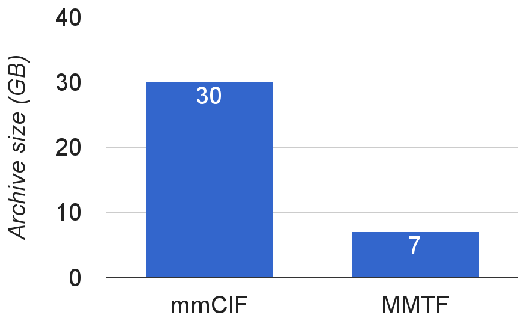

Loading...
Scalable
3D molecular graphics
on the web
Jose Duarte, Andreas Prlic, Peter Rose
3Dsig 2016

Atoms in the Protein Data Bank
In over 120.000 structures (asymmetric units)
Here is one of those atoms.
However they are usually not alone ...
... they come in groups, like this heme ...
... and form proteins ...
... as well as large complexes ...
... are those (becoming) too big for browsers?
Growth of the PDB archive
- Largest structure: HIV-1 Capsid
- ~2.4M unique atoms
- gzipped mmCIF file: 48.7MB
- 68 of the 100 largest structures
deposited in past 3 years
How to display such structures in a web-browser?
Steps to display a structure
- Download File
- Decompress & Parse
- Populate Data Model
- Create Geometry
- Render
Download & Parsing
- Download File ➠ ???
- Decompress & Parse ➠ ???
- Populate Data Model
- Create Geometry
- Render
Speeding-up
Download & Parsing
- Download: Smaller file-size
- Parsing: Binary encoding
- Consistent & complete data
➠ A new file format for transmission?
MacroMolecular
Transmission Format (MMTF)
- Binary (MessagePack as a container)
- Bespoke compression strategies:
- Dictionary encoding → store once, reference repeatedly
- Run-length encoding → store value + number of repeats
- Integer encoding → store floats with reduced precision
- Delta encoding → smaller numbers by storing differences
- Integer packing → tightly pack small integers

File size: mmCIF vs MMTF

File size of the whole archive
~120.000 structures, gzip compressed
Parsing time: mmCIF vs MMTF

Parsing time of the whole archive
~120.000 structures, gzip compressed
on a 2.6 GHz Intel Core i5 using JavaScript
MMTF - Included Data Fields
- Model/chain/group/atom names and ids
- Coordinates & B-factors
- Complete bonding data
- DSSP secondary structure
- and more, see http://mmtf.rcsb.org/
MMTF - Flavors
- Full:
- All atoms
- Three decimal place precision
- Reduced:
- C-alpha/phosphate & ligand atoms
- One decimal place precision
- Build your own:
- Specification: required & optional fields
- Planned: user data fields
MMTF - Availability


-
Open Source specification and libraries:
Java, JavaScript, Python, (C/C++ planned) -
Weekly updated PDB archive:
full & reduced flavor
Website: http://mmtf.rcsb.org/
Poster: #21 (Anthony Bradley)
Download & Parsing
- Download File ➠ MMTF
- Decompress & Parse ➠ MMTF
- Populate Data Model
- Create Geometry
- Render
Efficient Storage & Access
- Download File ➠ MMTF
- Decompress & Parse ➠ MMTF
- Populate Data Model ➠ ???
- Create Geometry
- Render
Data Model Wish-list
- Fast creation from parsed file
- Memory efficient
-
Convenient access
(e.g. of atom/residue level data)
Columnar Stores

Row-based:
ASN, 1, C |
GLY, 2, H |
PRO, 3, H |
VAL, 4, H
Column-based:
ASN, GLY, PRO, VAL |
1, 2, 3, 4 |
C, H, H, H
- Single TypedArray per property
- Parsed MMTF data can be copied in blocks
- Proxy objects for row-like access
Columnar Stores

Efficient Storage & Access
- Download File ➠ MMTF
- Decompress & Parse ➠ MMTF
- Populate Data Model ➠ Columnar Stores
- Create Geometry
- Render
Geometry
- Download File ➠ MMTF
- Decompress & Parse ➠ MMTF
- Populate Data Model ➠ Columnar Stores
- Create Geometry ➠ ???
- Render
Impostors
Impostors: For each pixel let GPU test intersection of sphere and camera ray.Quality resolution independent. Also available for cylinders.

Instancing

- Create geometry once
- Send to GPU once
-
Transform position &
render multiple times
⇦ Green surface is reused 59 times
for highly symmetric virus capsid
(PDB ID 1RB8)
Geometry
- Download File ➠ MMTF
- Decompress & Parse ➠ MMTF
- Populate Data Model ➠ Columnar Stores
- Create Geometry ➠ Impostors & Instancing
- Render
3D Rendering
- Download File ➠ MMTF
- Decompress & Parse ➠ MMTF
- Populate Data Model ➠ Columnar Stores
- Create Geometry ➠ Impostors & Instancing
- Render ➠ ???
Java Applet Deprecation

-
Java Applets have provided
fast execution and GPU access -
Removed from Google Chrome
in version 45 (Sep 2015) -
Oracle to deprecate Java plugin
in upcoming JDK 9
Browser Advances

- JavaScript approaches native speed
- WebGL offers plugin-free access
to the graphics card

webglstats.com
3D Rendering
- Download File ➠ MMTF
- Decompress & Parse ➠ MMTF
- Populate Data Model ➠ Columnar Stores
- Create Geometry ➠ Impostors & Instancing
- Render ➠ WebGL
Does it scale?
We can test it right now as
this presentation is running in a browser
HIV-1 capsid
hexameric subunit, 10800 atoms
HIV-1 capsid
216 hexameric and 12 pentameric subunit, ~2.4M unique atoms
PBCV-1 virus capsid
1680 instances of 9693 atoms (~16M atoms)
Faustovirus major capsid
2760 instances of 14478 atoms (~40M atoms)
It does scale!
NGL Viewer
- Supports MMTF, uses columnar stores & WebGL
- Openly developed @ https://github.com/arose/ngl
AS Rose & PW Hildebrand. NGL Viewer: a web application for molecular visualization.
Nucl. Acids Res. (1 July 2015) 43 (W1). doi:10.1093/nar/gkv402
Summary
- MMTF
- Small, compressed file-format
- Fast to parse, libraries available
- Useful data, like bonds, included
- Enables routine analyses of the whole PDB archive
- NGL Viewer
- Memory-efficient data model, MMTF support
- Fast rendering through WebGL
- Embeddable library, API
- Enables scalable 3D molecular graphics on the web
Acknowledgements

-
RCSB PDB Team

-
NCI/NIH
(U01 CA198942)

Thank you for your attention!
Questions?
- Posters: #21 (MMTF) and #24 (NGL Viewer)
- Talks@ISMB: TT18 and SST02-D (Peter Rose)
- MMTF: http://mmtf.rcsb.org
- NGL Viewer: https://github.com/arose/ngl